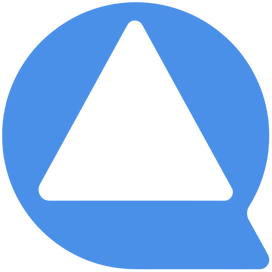

QuirkClinicsSeis números do seu funil. Em dois minutos você vê onde o dinheiro está vazando — e quanto muda se você arrumar.
Etapa 1 de 6
Todo mundo que preencheu formulário, chamou no direct ou no WhatsApp vindo de anúncio. Conte o total, mesmo quem nunca respondeu depois.
Etapa 2 de 6
Quem deu qualquer sinal de vida depois do primeiro contato do seu time — nem que tenha sido um "oi".
Etapa 3 de 6
Se você não anota isso, chute quantos passaram do "olá" para uma conversa de verdade — perguntaram preço, procedimento, disponibilidade.
Etapa 4 de 6
Horário marcado na agenda, mesmo que a pessoa não tenha confirmado depois.
Etapa 5 de 6
Dos que agendaram, quantos sentam na cadeira. Se você nunca mediu, pense nos buracos da agenda da semana passada.
Etapa 6 de 6
Viraram paciente de verdade: assinaram, pagaram, começaram.
Último passo
Você vê o resultado na tela agora. Mandamos uma cópia para você guardar.